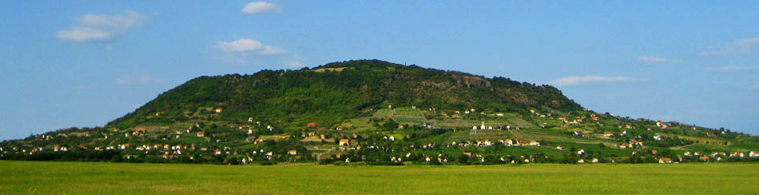
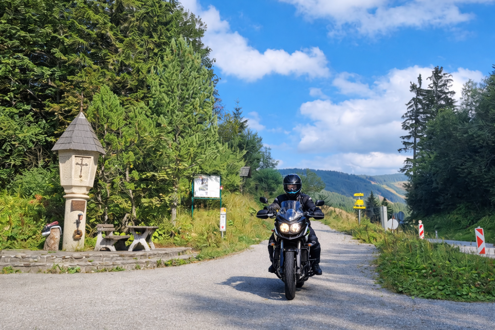
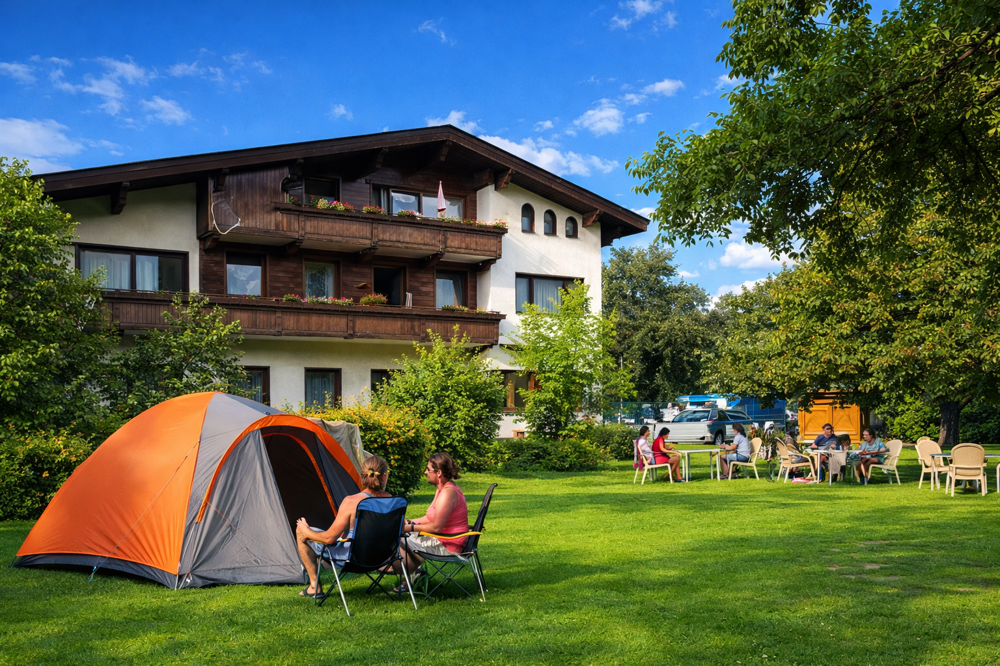

DAY01 – Velence → Bruck an der Mur
A mérés automatikusan indul oldalnyitáskor, majd 5 mp múlva frissít.
A távolságok minden célpontnál frissülnek, és az oldal a legvalószínűbb következő pontra ugrik.
A böngésző nem tudott helyet kérni. Ellenőrizd a helymeghatározási engedélyt (Telefon: beállítások → Böngésző
→ Hely).
1. Somló (A magányos tanúhegy)
47.147311, 17.368018
mérés: várakozás
távolság: —
A Bakony-vidék legikonikusabb vulkáni tanúhegye, amely 431 méterrel emelkedik a tengerszint fölé. Jellegzetes csonkakúp alakja már messziről uralja a tájat az útvonal mentén.

2. Feistritzsattel (Feistritz-hágó)
47.44822080893985, 15.621515009504265
mérés: várakozás
távolság: —
Az útvonal első komolyabb alpesi hágója 1298 méteres tengerszint feletti magasságban. A hágó a Wechsel-hegység gerincén vezet át, Alsó-Ausztria és Stájerország határán.

3. Landhaus & Camping Pichler
47.402611, 15.227256
mérés: várakozás
távolság: —
Megállóhely és szállás a nap végén Bruck an der Mur térségében.
